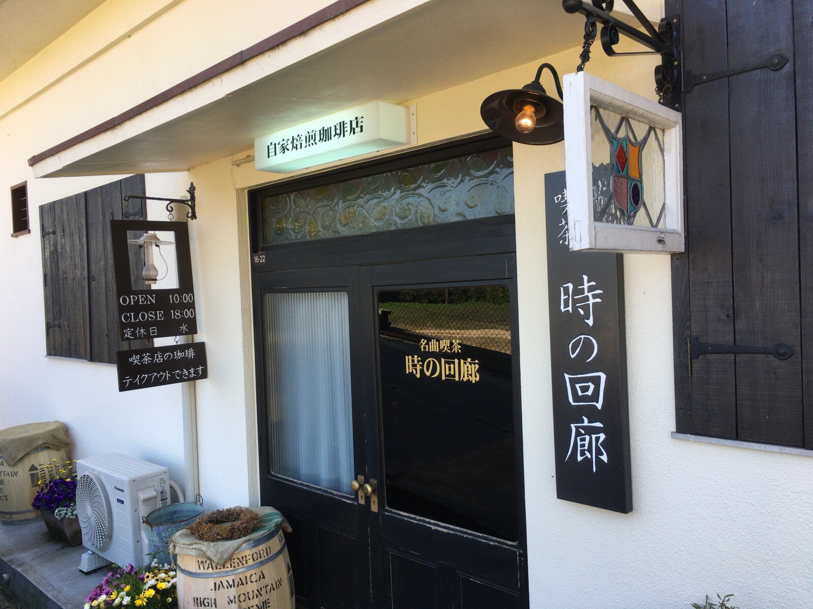

#description(時の回廊の雰囲気に魅せられて、岡山の児島にある名曲喫茶は、異空間を感じられる特別な場所となりました。自家焙煎の店でもありオーナーの謙虚な姿勢がまた素晴らしいです。)
FREETITLE:岡山の児島で自家焙煎の名曲喫茶は特別の空間

瀬戸大橋の岡山側の入り口の丘にある時の回廊は少し場所が分かりにくいです。入り口まで車で上がってお店の中へ入るとそこは異空間です。
 クラシックの音楽が流れる店内は、やや薄暗く音楽を聴きながら飲むコーヒーにふさわしい場でした。
奥のスピーカーから流れる音楽が店内全体を包む感じていろいろな席に座ってみたくなります。
クラシックの音楽が流れる店内は、やや薄暗く音楽を聴きながら飲むコーヒーにふさわしい場でした。
奥のスピーカーから流れる音楽が店内全体を包む感じていろいろな席に座ってみたくなります。

レコード室には、今流れているLPのジャケットが飾られ、音楽を愛するオーナーの想いがこもった部屋になっています。
何時間でも居たくなる時の回廊で一時間近く過ごしたでしょうか。
帰りに教えてもらった絶景も見逃せません。
瀬戸大橋の岡山側の山がお店から徒歩で10分かからない場所にあり、その場所を教えて頂き、登ってみました。
写真ではなかなか感動が伝わりませんが、お店と同様にここでも心をがとても和む場所でした。

**時の回廊の情報 [#d196d643]
岡山県倉敷市下津井田之浦１丁目１６−２２
電話： 070-5522-1622
https://www.tokinokairou.com/
若くて清々しい店主でした。